Open to Internships Opportunity & Collaborations
Raisya Eka Putri
_
Aspiring Cybersecurity Analyst and Full-Stack Developer currently pursuing an Informatics Undergraduate at President University. Passionate about building secure digital solutions, analyzing system vulnerabilities, and transforming ideas into impactful technology projects.
With experience across cybersecurity, software development, and creative media, I enjoy combining technical problem-solving with design thinking to create meaningful user experiences and innovative solutions.
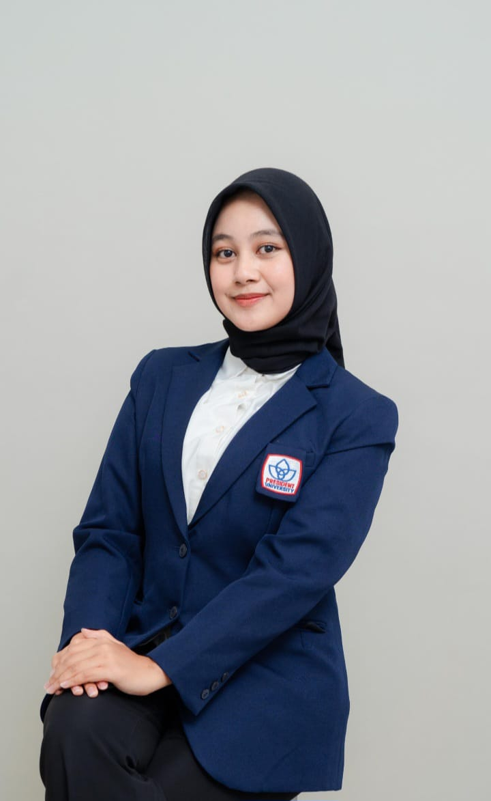
About Me
Who Am I?
Informatics undergraduate at President University specializing in cybersecurity with hands-on experience in penetration testing, security auditing, incident response, and digital forensics. Proficient in Windows and Linux environments, as well as full-stack web and mobile application development with 5+ completed projects. Complemented by skills in digital design and game development.
Beyond cybersecurity, I develop web and mobile applications using technologies such as React.js, JavaScript, Python, Kotlin, and MySQL. I have completed multiple development projects and continue to expand my expertise in both secure systems and modern software development. Currently, I am seeking internship opportunities where I can contribute, learn, and grow as an IT professional.
SOFT SKILL
TECH STACK
BAHASA
Education
Education
President University
Information Technology
GPA: 3.67 / 4.00
Jul 2024 — Present
MAN 1 Medan
Ilmu Pengetahuan Alam (IPA)
Jul 2021 — Mei 2024
Experience
Organization Experience
Member Information & Creative Media
Okt 2024 – Jul 2025PUMA Informatics · President University
As a member of Information and Creative Media in PUMA Informatics President University, I contributed to event branding, visual content creation, and media documentation for organizational activities. I also collaborated with multiple divisions to support campus event execution while maintaining consistency across event publications and promotional materials.
Liaison Officer — COMPSPHERE 2025
Okt 2025PUFA Computer Science · President University
Served as a Liaison Officer Committee Member for COMPSPHERE 2025, the largest annual event organized by the Faculty of Computer Science. Coordinated communication with invited speakers and guest performers, managed scheduling and event arrangements, and provided on-site assistance to ensure a professional and welcoming experience throughout the event.
Liaison Officer — Seminar Social Project (SOSPRO) 2025
Mei – Jun 2025SMAN 1 Cikarang Timur
Served as a Liaison Officer Committee Member for a community outreach project focused on educating high school students about Artificial Intelligence with title CTRL P + CTRL F : Prepare the Future and Navigating Life With with AI. Coordinated with educational institutions, facilitated communication with external stakeholders, and supported the organization of a seminar aimed at promoting responsible and effective AI usage among students.
Liaison Officer — Temu Alumni 2025
Feb 2025President University
Served as a Liaison Officer Committee Member for Temu Alumni 2025, responsible for speaker outreach, vendor coordination, and guest relations. Assisted in identifying and contacting alumni speakers, coordinated event requirements, and provided dedicated support to speakers before, during, and after the event to ensure a positive and professional experience.
Master of Ceremony — Informatics Connect 2025
Jan 2025Universitas Multimedia Nusantara
Served as Master of Ceremonies for Informatics Connect 2025, a comparative study event between PUMA Informatics President University and the Himpunan Mahasiswa Informatika (HMIF) Universitas Multimedia Nusantara. Facilitated event sessions, guided participants throughout the program, and ensured effective communication and engagement between both organizations.
PIC of Design — Guest Lecture 2024
Des 2024President University
Served as the Person in Charge of the Design Division for Guest Lecture 2024 attended by PT Gunung Raja Paksi Tbk. Managed the development of event visual materials, including banners, certificates, and supporting promotional content, while ensuring consistent branding and visual quality throughout the event.
PIC of Design — UNITICS 2024
Des 2024President Executive Center
Served as the Person in Charge of the Design Division for UNITICS 2024, an internal welcoming event for newly accepted PUMA Informatics members. Led the creation and management of event visual materials, including certificates, banners, and documentation assets, while maintaining consistent branding throughout the event.
Logistic Committee — Brainstormics 2024
Nov 2024President University
Served as a Logistics Committee Member for Brainstormics 2024, an internal forum organized to introduce new PUMA Informatics members and gather student feedback. Assisted in preparing and coordinating event resources, equipment, and logistical requirements to support the successful execution of the event.
Volunteer
Volunteer Experience
Community engagement, social contribution, and event support activities beyond academic and organizational responsibilities.
Event Guard Volunteer
Resident Assistant Dormitory President University
Served as an Event Guard Volunteer for PUSH CUP 2025, a seven-day sports competition organized by the Resident Assistant Dormitory of President University. Supported event operations by maintaining participant safety, monitoring competition areas, assisting with crowd management, and ensuring the smooth execution of various sporting activities.
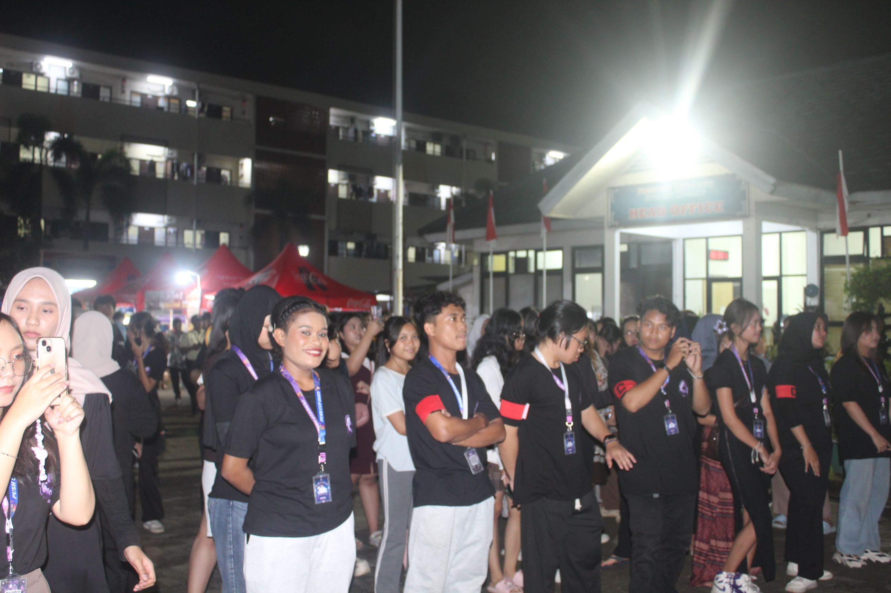
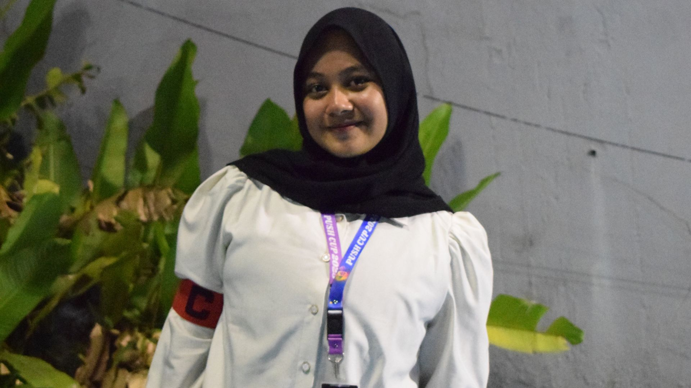
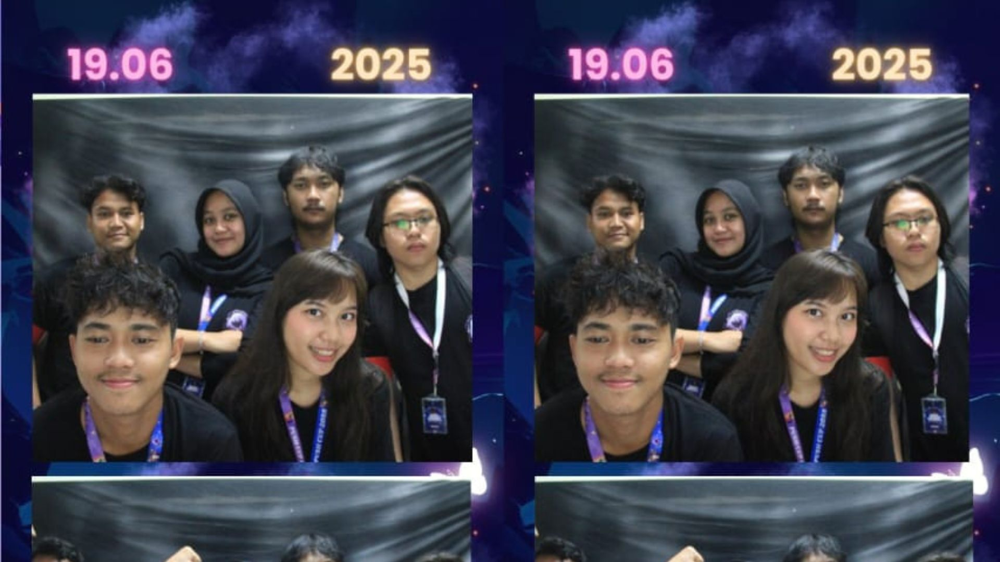

Design Committee Member
PUFA Computer Science × Yayasan Panti Asuhan Ar-Rahman
Contributed as a Design Committee Member for a social outreach initiative organized by PUFA Computer Science in collaboration with Yayasan Panti Asuhan Ar-Rahman. Assisted in creating visual materials, event assets, and documentation to support fundraising, donation activities, and community engagement programs for children.
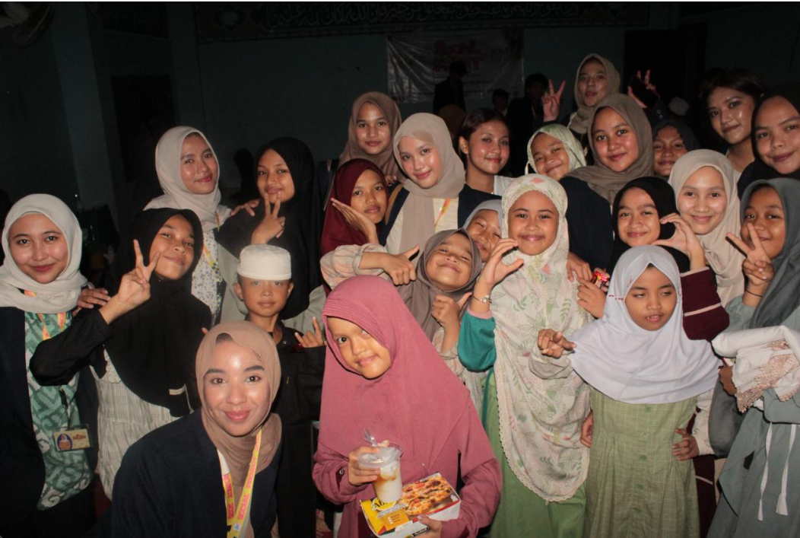
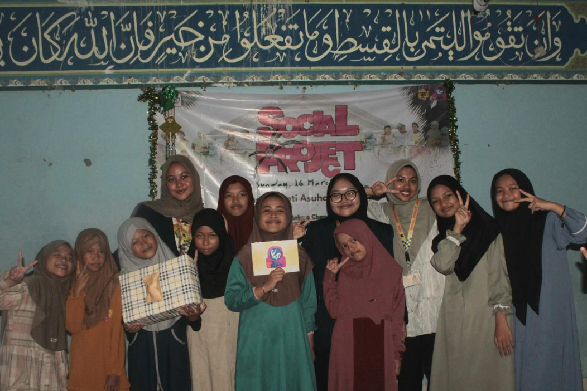
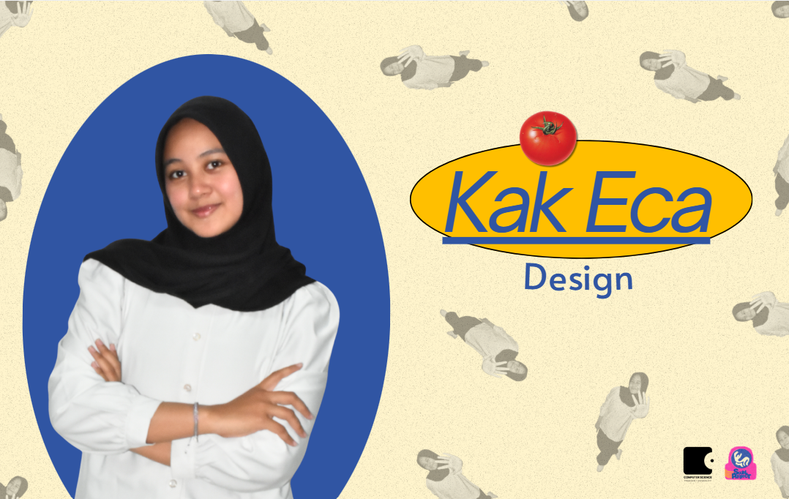
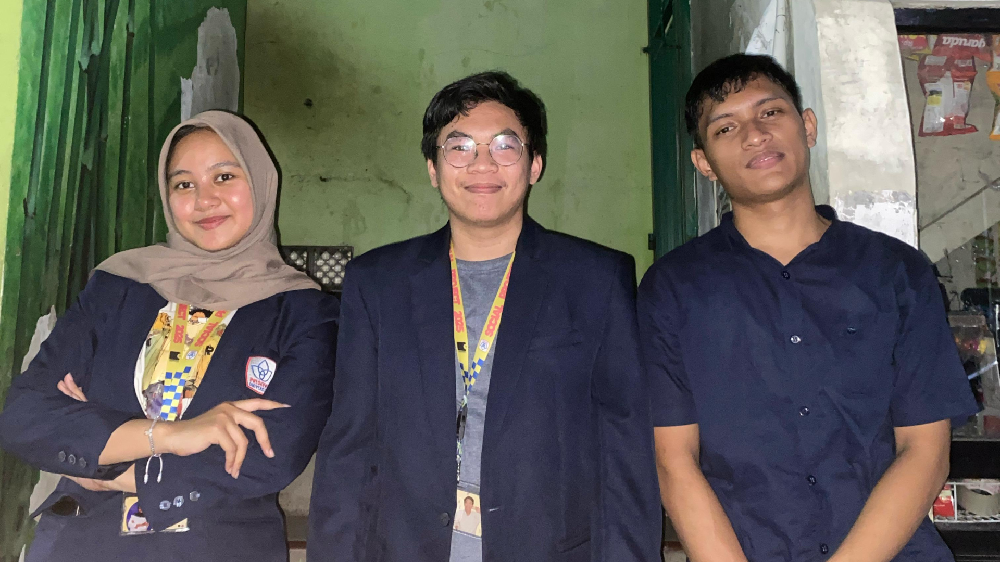
Projects
Project I have Built
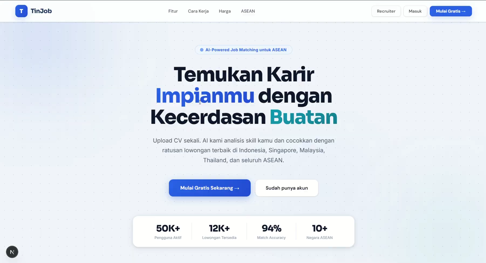
TinJob
AI-powered job platform helping students find internships and entry-level opportunities.
GitHubAwarding
Certification & Achievements
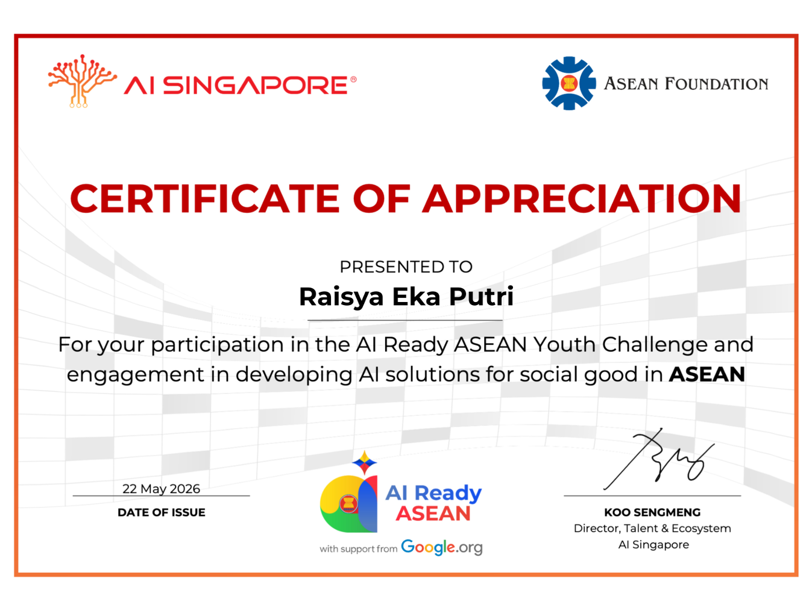
AI Ready ASEAN Youth Challenge
AI Singapore × ASEAN Foundation
COMPLETED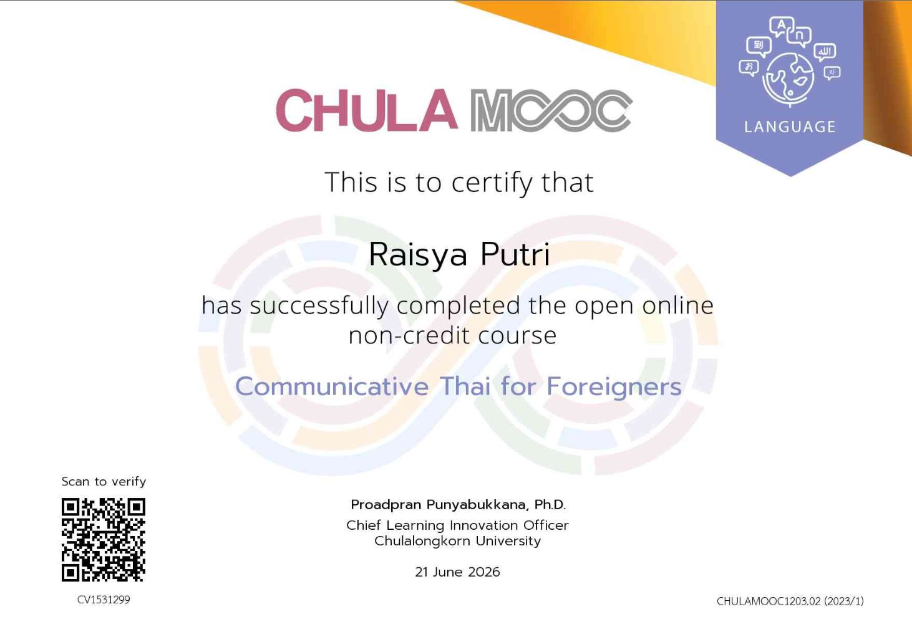
Communicative Thai for Foreigners
Chula MOOC
COMPLETED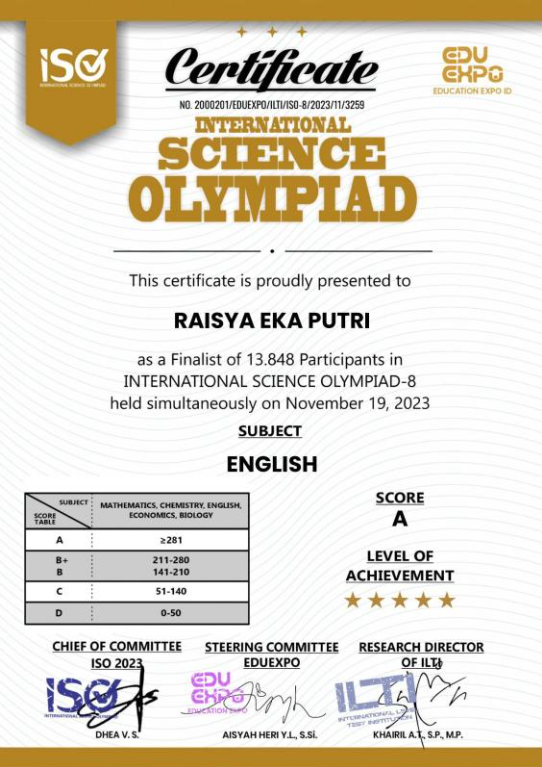
Finalist International Science Olympiad-8
International Science Olympiad
FINALIST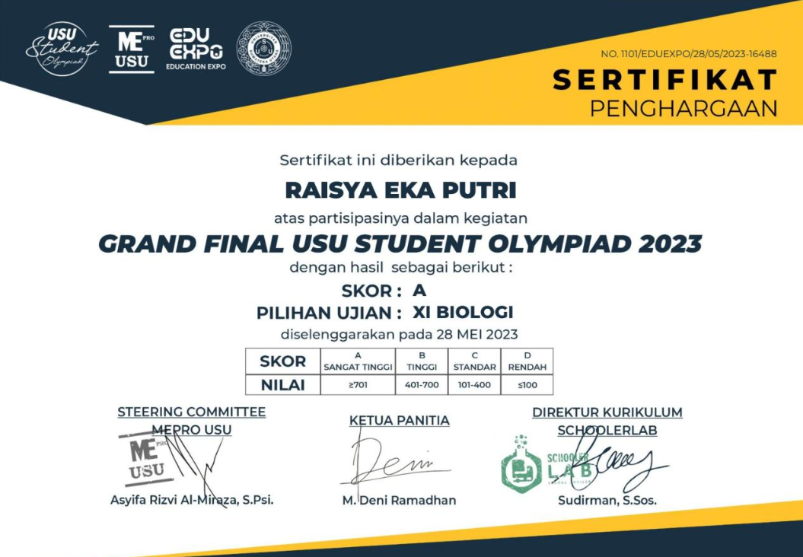
USU Student Olympiad 2023
Universitas Sumatera Utara
FINALIST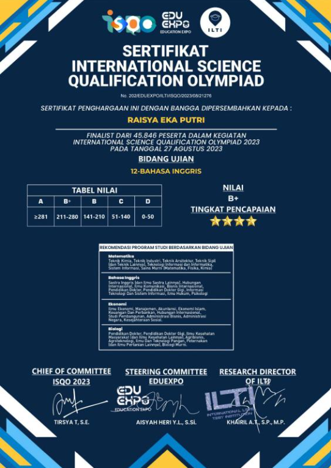
International Science Qualification Olympiad
International Science Competition
FINALISTContact
Let's Connect
Open to internship opportunities and real-world projects in IT Support, Cyber Security, and Software Development. Feel free to contact me.